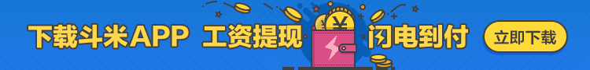

<!--
  Generated template for the PagecPage page.

  See http://ionicframework.com/docs/components/#navigation for more info on
  Ionic pages and navigation.
-->
<ion-header>

  <ion-navbar>
    <ion-title>特色兼职</ion-title>
    <button class="button1" (click)="back()"> <ion-icon name="arrow-back"style="font-size: 25px"></ion-icon></button>
  </ion-navbar>

</ion-header>


<ion-content>
  <div class="div-c">
    
    <!--<br>-->
    <!--为你优选-->
  </div>
  <ion-item class="jw-c-a" (click)="itemSelected(item)"
            style="height: 130px;border-top: solid 1px #d0d0d0"*ngFor="let item of arr">
    <ion-item class="jw-c-left">
      <ion-item class="jw--c-left-top">
        <h3>{{item?.jobname}}</h3>
      </ion-item>
      <ion-item class="jw-c-left-buttom"style="margin-top: -10px">
        <ul class="jw-ul-a" style="margin-top: -3px">

          <li><span style="margin-left: -29%;margin-top: -20%;;font-size: 15px">工作时间:</span><a href="#" style="font-size: 15px">{{item?.duration}}</a> </li>
          <li><span style="margin-left: -29%;padding-top: 3px;font-size: 15px">工作地点:</span><a href="#" style="font-size: 15px">{{item?.workplace}}</a> </li>
          <li><span style="margin-left: -29%;padding-top: 3px;color: red;;font-size: 15px">{{item?.mode}}/{{item?.position}}</span></li>
        </ul>
      </ion-item>
    </ion-item>
    <ion-item class="jw-c-right" style="margin-top: -110px;margin-right: -20px;border-bottom: white">
      <span style="margin-top: -100px;color: red;padding-top: -100px;font-size: 15px">{{item?.salary}}元/天</span>
      <br>
      <br>

      <span style="background-color:pink;padding: 2px;border: none;margin-left: 8%">&nbsp;&nbsp;&nbsp;人气&nbsp;&nbsp;&nbsp;</span>


    </ion-item>
  </ion-item>

</ion-content>
